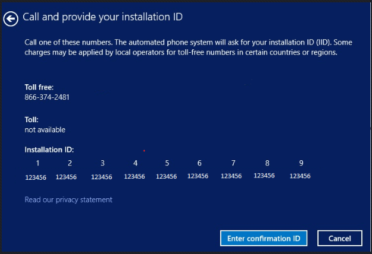
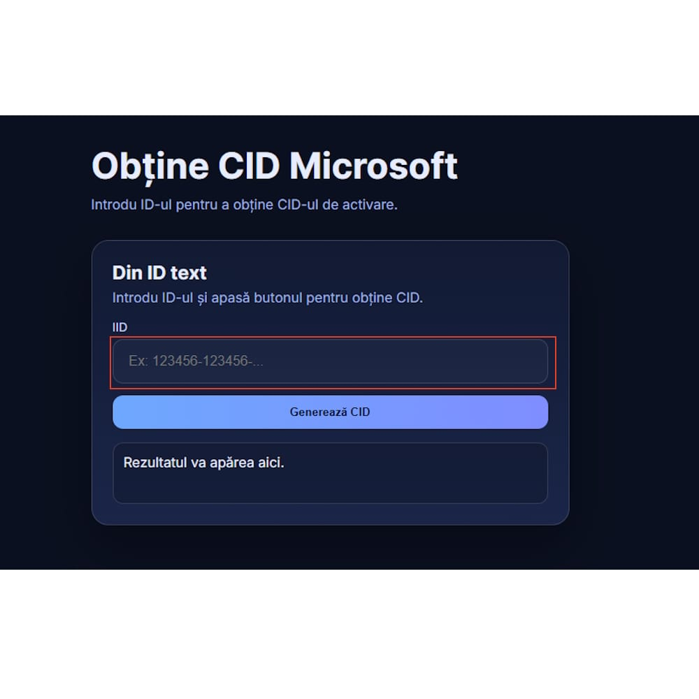
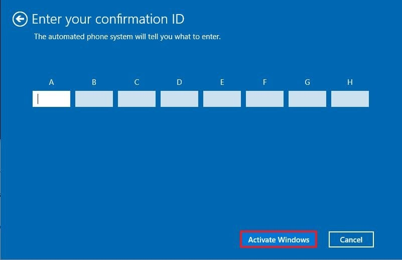

1. Dacă apare o fereastră asemănătoare, selectați „Activați prin telefon”. Se va afișa ecranul cu ID-ul de instalare și un număr de telefon gratuit, deservit de un sistem automat.

2. Copiați ID-ul de instalare afișat la pasul 2 din fereastra de activare.

3. Accesați site-ul de la linkul acesta:
GetCID4. Introduceți ID-ul de instalare copiat anterior în secțiunea hașurată.

5. Apăsați pe Get confirmation ID.
6. Introduceți ID-ul de confirmare primit în fereastra de activare telefonică, iar produsul se va activa.

7. În unele cazuri, dacă produsul nu s-a activat, va trebui să apăsați butonul Depanare (Troubleshoot), apoi să reporniți calculatorul.